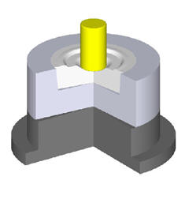
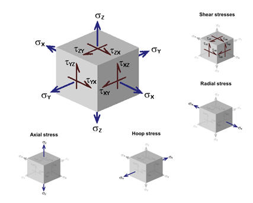
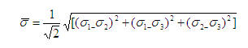
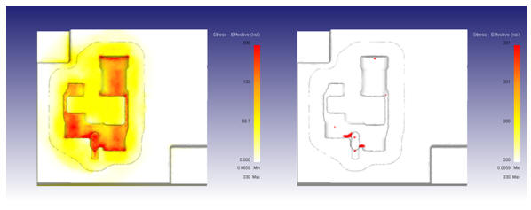
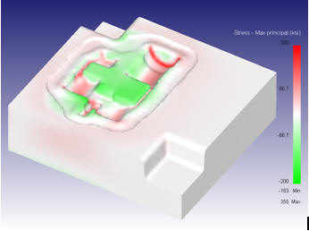
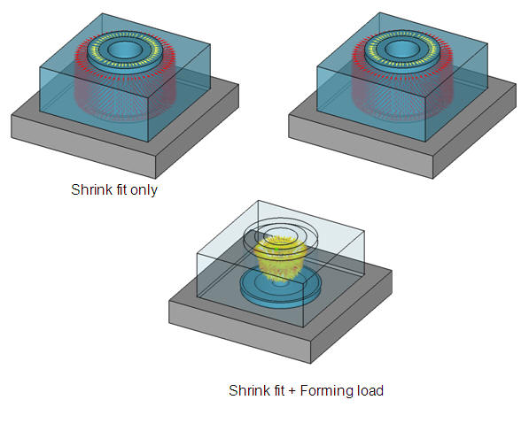
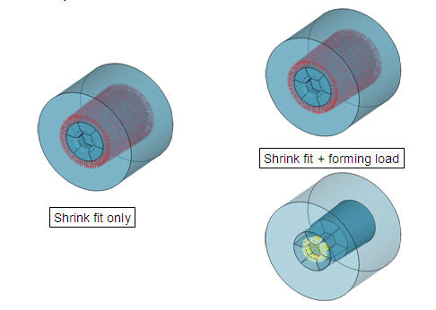
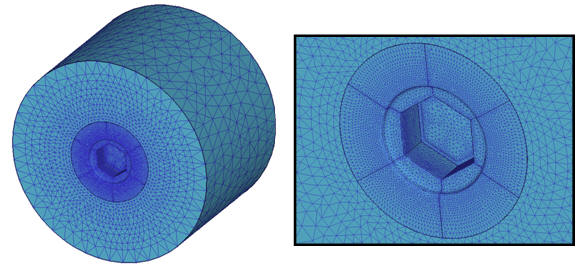
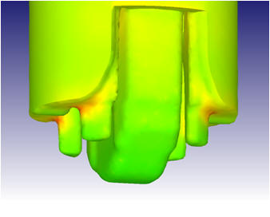

1. Die Stress Analysis Importance
4. Die Stress Analysis Effective Stress
5. Die Stress Analysis Fatigue Failure
6. Die Stress Example - Low Complexity
7. Die Stress Example - Medium Complexity
8. Die Stress Example - High Complexity
9. Coupled Die Stress Analysis
Forging results in high stress on tools and dies.
Process simulation has been used to analyze industrial die failures for decades
Millions of dollars in savings have been attributed to using die stress analysis in conjunction with good engineering and process control.
Leading companies worldwide are engineering tool & die performance before failures occur!
Why - die cost is directly related to die life!
Catastrophic failure
Plastic deformation
Large scale yielding
Local yielding / upsetting
Low cycle fatigue (LCF)
Mechanical fatigue
Thermal fatigue
Wear
For Die stress state and its components See Fig. 1 and Fig. 2.

Die stress state

Die stress components
The Effective stress is a numerical quantity used in converting a 3D stress state to 1D data for analysis.

The Effective stress is a ‘flag’ that will indicate the onset of plastic deformation (yielding).
Yield strength of a material is determined using a tensile test.
Low Cycle Fatigue (LCF) is a common mode of die failure.
Failures occur in four stages:
Fracture initiation
Slow crack growth
Accelerated crack growth rate
Rapid fracture
Maximum Principal Stress is important, because LCF failures can not occur without cyclic tensile stress.
To better determine where the die would plastically deform, use the yield stress as the minimum stress in your plot – anything in color has yielded as shown in Fig. 3.

Low complexity Models
Maximum principal stress shows where the die is in tension or compression. Tensile areas are at risk of fatigue failure. (See Fig. 4)

Maximum Principle stress
When using shrink fits, valuable information can be gained by running two die stress simulations – one with only the shrink fit and one with both the shrink fit and forming load. (See Fig. 5.)

Shrink fit and Forming load
Mesh the elastic dies so that the mesh is the finest in the center and gets coarser as you go outward. Twenty-six inter-object relations must be defined to generate contact among all the objects. This is what makes this a much more complex simulation. (See Fig. 6 and Fig. 7)

High complexity model

High complexity model with shrink fit and Forming
Decoupled (one step) die stress has been very effective in predicting tool failures .
In some forgings, the highest stress occurs in the middle of the stroke.
The punch failure due to a tensile stress is shown using a tightly coupled die stress analysis.

Couple die stress analysis
Related Topics: